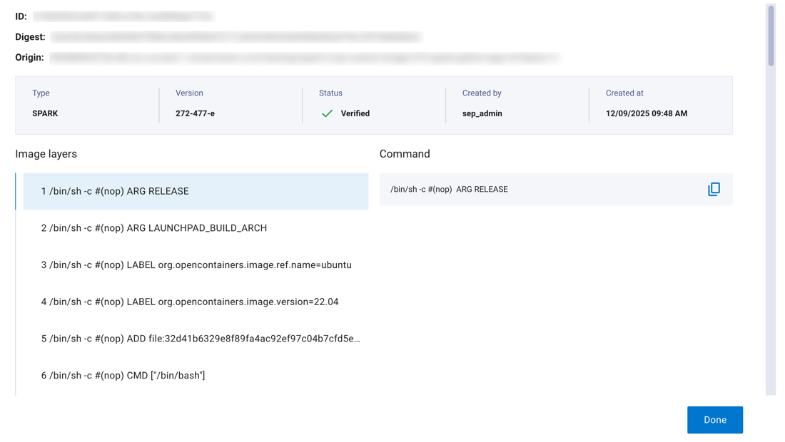
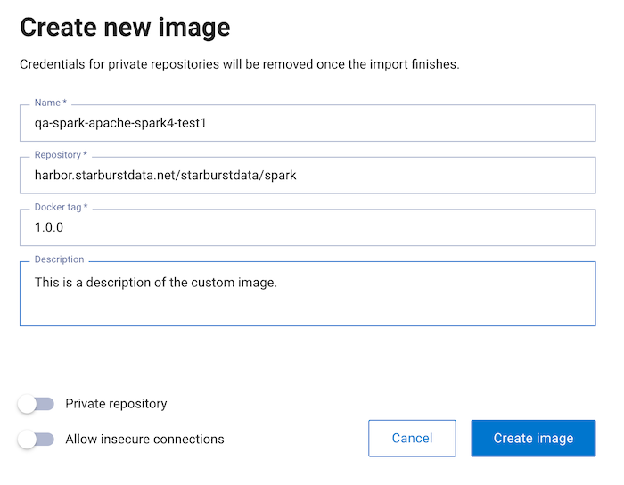
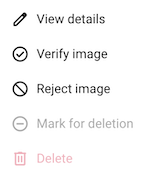

Custom Spark images#
Dell Data Processing Engine (DDPE) supports custom Spark images. Custom images
let you package job requirements and run jobs consistently across environments.
You can add custom or third‑party libraries and system packages, define Python
environments, pin package versions, use supported open‑source Spark
variants, and inject environment variables and default Spark configurations,
such as spark-defaults.conf.
Starburst Spark base image#
DDPE provides a pre-configured Starburst Spark base image that you can use as the foundation for your custom images. The base image is available at:
public.ecr.aws/starburstdata/dell-aidp/starburst-spark:<tag>
The image is based on spark:3.5.6-scala2.12-java17-python3-ubuntu and includes essential tools and utilities for advanced Spark and data ecosystem integrations.
Included tools and utilities#
The base image includes the following tools to enhance monitoring and logging capabilities:
Lumberjack: A utility configured to stream container logs to a central logging system, ensuring traceability and easy debugging within the DDPE environment.
getGpuResources: A script used to detect Nvidia graphics cards.
Pre-installed libraries (JARs)#
The image contains a comprehensive set of libraries, including support for GPU-accelerated computing and various data connectors and frameworks.
Rapids Accelerator JARs#
The image includes libraries for the NVIDIA RAPIDS Accelerator for Apache
Spark, supporting both ARM64 and AMD64 architectures based on the 25.12
RAPIDS version. These libraries enable Spark to leverage GPUs for significant
performance gains in data processing tasks.
Core dependency JARs#
The following is a list of key JAR files included in the Starburst Spark base image, covering components like Hadoop, Hive, various data formats, and foundational utilities. Expand Core dependencies to view included libraries grouped by type:
Core dependencies
Apache Calcite libraries
calcite-core-1.16.0.jar
calcite-druid-1.16.0.jar
calcite-linq4j-1.16.0.jar
Apache Commons libraries
commons-beanutils-1.9.3.jar
commons-cli-1.2.jar
commons-codec-1.15.jar
commons-collections-3.2.2.jar
commons-collections4-4.1.jar
commons-compiler-2.7.6.jar
commons-compress-1.19.jar
commons-configuration2-2.1.1.jar
commons-crypto-1.0.0.jar
commons-daemon-1.0.13.jar
commons-dbcp-1.4.jar
commons-io-2.6.jar
commons-lang-2.6.jar
commons-lang3-3.19.0.jar
commons-logging-1.2.jar
commons-math3-3.1.1.jar
commons-net-3.6.jar
commons-pool-1.5.4.jar
Apache Curator libraries
curator-client-2.12.0.jar
curator-framework-2.12.0.jar
curator-recipes-2.12.0.jar
Apache Hadoop libraries
hadoop-annotations-3.1.0.jar
hadoop-auth-3.1.0.jar
hadoop-common-3.1.0.jar
hadoop-hdfs-2.2.0.jar
hadoop-yarn-api-3.1.0.jar
hadoop-yarn-common-3.1.0.jar
hadoop-yarn-registry-3.1.0.jar
hadoop-yarn-server-applicationhistoryservice-3.1.0.jar
hadoop-yarn-server-common-3.1.0.jar
hadoop-yarn-server-resourcemanager-3.1.0.jar
hadoop-yarn-server-web-proxy-3.1.0.jar
Apache Hive libraries
hive-classification-3.1.3.jar
hive-common-3.1.3.jar
hive-exec-3.1.3.jar
hive-llap-client-3.1.3.jar
hive-llap-common-3.1.3.jar
hive-llap-tez-3.1.3.jar
hive-metastore-3.1.3.jar
hive-serde-3.1.3.jar
hive-service-rpc-3.1.3.jar
hive-shims-0.23-3.1.3.jar
hive-shims-3.1.3.jar
hive-shims-common-3.1.3.jar
hive-shims-scheduler-3.1.3.jar
hive-standalone-metastore-3.1.3.jar
hive-storage-api-2.7.0.jar
hive-upgrade-acid-3.1.3.jar
hive-vector-code-gen-3.1.3.jar
AWS libraries
aws-java-sdk-bundle-1.12.793.jar
Custom images libraries
image-additions-294-479-e.1.jar
image-modifications-294-479-e.1.jar
Data format libraries
opencsv-2.3.jar
orc-core-1.5.1.jar
orc-shims-1.5.1.jar
paranamer-2.7.jar
parquet-hadoop-bundle-1.10.0.jar
protobuf-java-2.5.0.jar
re2j-1.1.jar
sketches-core-0.9.0.jar
Database connection libraries
HikariCP-6.3.0.jar
HikariCP-java7-2.4.12.jar
Database driver libraries
mssql-jdbc-6.2.1.jre7.jar
DataNucleus libraries
datanucleus-api-jdo-4.2.4.jar
datanucleus-core-4.1.17.jar
datanucleus-rdbms-4.1.19.jar
derby-10.14.1.0.jar
Delta Lake libraries
delta-spark_2.12-3.3.0.jar
delta-storage-3.3.0.jar
Development and testing libraries
jline-0.9.94.jar
joda-time-2.14.0.jar
joni-2.1.11.jar
jpam-1.1.jar
jsch-0.1.54.jar
json-1.8.jar
json-io-2.5.1.jar
json-smart-2.3.jar
jsp-api-2.1.jar
jspecify-1.0.0.jar
jsr305-3.0.2.jar
jsr311-api-1.1.1.jar
jta-1.1.jar
junit-3.8.1.jar
Google libraries
guava-33.5.0-jre.jar
guice-3.0.jar
guice-assistedinject-7.0.0.jar
guice-servlet-7.0.0.jar
Hadoop AWS libraries
hadoop-aws-3.3.4.jar
HBase libraries
hbase-client-2.0.0-alpha4.jar
hbase-common-2.0.0-alpha4.jar
hbase-hadoop-compat-2.0.0-alpha4.jar
hbase-hadoop2-compat-2.0.0-alpha4.jar
hbase-metrics-2.0.0-alpha4.jar
hbase-metrics-api-2.0.0-alpha4.jar
hbase-protocol-2.0.0-alpha4.jar
hbase-protocol-shaded-2.0.0-alpha4.jar
hbase-shaded-miscellaneous-1.0.1.jar
hbase-shaded-netty-1.0.1.jar
hbase-shaded-protobuf-1.0.1.jar
Hudi libraries
hudi-spark3.5-bundle_2.12-1.0.2.jar
Iceberg libraries
iceberg-aws-bundle.jar
iceberg-aws-bundle-nvidia(1.6.1).jar
iceberg-spark-runtime(1.8.0).jar
iceberg-spark-runtime-nvidia.jar
Jackson (JSON) libraries
jackson-annotations-2.20.jar
jackson-core-2.20.1.jar
jackson-core-asl-1.9.13.jar
jackson-databind-2.20.1.jar
jackson-jaxrs-1.9.2.jar
jackson-jaxrs-base-2.20.1.jar
jackson-jaxrs-json-provider-2.20.1.jar
jackson-mapper-asl-1.9.13.jar
jackson-module-jaxb-annotations-2.20.1.jar
jackson-xc-1.9.2.jar
Java EE/Jakarta libraries
j2objc-annotations-3.1.jar
jakarta.activation-api-1.2.2.jar
janino-2.7.6.jar
java-util-1.9.0.jar
javax.inject-1.jar
javax.jdo-3.2.0-m3.jar
javax.servlet-api-3.1.0.jar
javolution-5.5.1.jar
jaxb-api-2.2.11.jar
jaxb-impl-2.2.3-1.jar
jcodings-1.0.18.jar
jdo-api-3.0.1.jar
Jersey libraries
jersey-client-1.19.jar
jersey-core-1.19.jar
jersey-guice-1.19.jar
jersey-json-1.19.jar
jersey-server-1.19.jar
jersey-servlet-1.19.jar
jettison-1.1.jar
Jetty libraries
jetty-http-12.1.4.jar
jetty-io-12.1.4.jar
jetty-rewrite-12.1.4.jar
jetty-security-12.1.4.jar
jetty-server-12.1.4.jar
jetty-servlet-9.3.20.v20170531.jar
jetty-util-12.1.4.jar
jetty-util-ajax-12.1.4.jar
jetty-webapp-9.3.20.v20170531.jar
jetty-xml-12.1.4.jar
Kerberos libraries
kerb-admin-1.0.1.jar
kerb-client-1.0.1.jar
kerb-common-1.0.1.jar
kerb-core-1.0.1.jar
kerb-crypto-1.0.1.jar
kerb-identity-1.0.1.jar
kerb-server-1.0.1.jar
kerb-simplekdc-1.0.1.jar
kerb-util-1.0.1.jar
kerby-asn1-1.0.1.jar
kerby-config-1.0.1.jar
kerby-pkix-1.0.1.jar
kerby-util-1.0.1.jar
kerby-xdr-1.0.1.jar
leveldbjni-all-1.8.jar
libfb303-0.9.3.jar
libthrift-0.9.3.jar
Logging libraries
log4j-1.2.16.jar
log4j-1.2-api-2.25.2.jar
log4j-api-2.25.2.jar
log4j-core-2.25.2.jar
log4j-slf4j-impl-2.25.2.jar
log4j-web-2.25.2.jar
memory-0.9.0.jar
Metrics libraries
metrics-core-3.1.0.jar
metrics-json-3.1.0.jar
metrics-jvm-3.1.0.jar
Misc. and format libraries
dnsjava-2.1.7.jar
dropwizard-metrics-hadoop-metrics2-reporter-0.1.2.jar
ehcache-3.3.1.jar
error_prone_annotations-2.44.0.jar
esri-geometry-api-2.0.0.jar
failureaccess-1.0.3.jar
fastutil-6.5.6.jar
findbugs-annotations-1.3.9-1.jar
flatbuffers-1.2.0-3f79e055.jar
fst-2.50.jar
geronimo-jcache_1.0_spec-1.0-alpha-1.jar
groovy-all-2.4.11.jar
gson-2.2.4.jar
Nessie libraries
nessie-spark-extensions-3.5_2.12-0.102.5.jar
Networking and HTTP libraries
hppc-0.7.2.jar
htrace-core-3.2.0-incubating.jar
htrace-core4-4.1.0-incubating.jar
httpclient-4.5.14.jar
httpcore-4.4.1.jar
ivy-2.4.0.jar
Netty libraries
netty-3.7.0.Final.jar
netty-buffer-4.1.17.Final.jar
netty-common-4.1.17.Final.jar
nimbus-jose-jwt-10.2.jar
Security and utilities libraries
accessors-smart-1.2.jar
aircompressor-0.10.jar
ant-1.9.1.jar
ant-launcher-1.9.1.jar
antlr-runtime-3.5.2.jar
aopalliance-1.0.jar
arrow-format-0.8.0.jar
arrow-memory-0.8.0.jar
arrow-vector-0.8.0.jar
asm-9.9.jar
audience-annotations-0.5.0.jar
avatica-1.11.0.jar
avro-1.8.2.jar
bonecp-0.8.0.RELEASE.jar
SLF4J logging libraries
slf4j-api-2.0.17.jar
slf4j-log4j12-1.7.25.jar
snappy-java-1.1.1.3.jar
sqlline-1.3.0.jar
ST4-4.0.4.jar
Spark Connect libraries
spark-connect_2.12-3.5.7.jar
Transaction management libraries
tephra-api-0.6.0.jar
tephra-core-0.6.0.jar
tephra-hbase-compat-1.0-0.6.0.jar
token-provider-1.0.1.jar
transaction-api-1.1.jar
Trino libraries
trino-aws-proxy-spark3-20251205-6b1db67.jar
Twill libraries
twill-api-0.6.0-incubating.jar
twill-common-0.6.0-incubating.jar
twill-core-0.6.0-incubating.jar
twill-discovery-api-0.6.0-incubating.jar
twill-discovery-core-0.6.0-incubating.jar
twill-zookeeper-0.6.0-incubating.jar
XML/Stax libraries
stax-api-1.0.1.jar
stax2-api-3.1.4.jar
woodstox-core-5.0.3.jar
xmlenc-0.52.jar
xz-1.5.jar
ZooKeeper libraries
zookeeper-3.4.6.jar
Pre-installed Python libraries#
The following is a list of key Python libraries included in the Starburst Spark base image. Expand Pre-installed Python libraries to view included libraries grouped by type:
Pre-installed Python libraries
Cloud/Storage access
boto3-1.36.25
six-1.17.0
statsmodels-0.14.4
tzdata-2024.2
xlrd-2.0.1
Machine learning and AI
absl-py-2.3.0
asttokens-1.6.3
flatbuffers-24.12.23
gast-0.6.0
google-pasta-0.2.0
grpcio-1.70.0
h5py-3.12.1
keras-3.11.3
libclang-18.1.1
ml-dtypes-0.4.1
namex-0.0.8
opt_einsum-3.4.0
optree-0.13.1
protobuf-5.29.5
tensorflow-2.18.0
tensorflow-io-gcs-filesystem-0.37.1
termcolor-2.5.0
wrapt-1.17.2
RAPIDS (GPU acceleration)
cudf-cu12-25.12.0
dask-cudf-cu12-25.12.0
pylibcudf-cu12-25.12.0
cuml-cu12-25.12.0
cugraph-cu12-25.12.0
nx-cugraph-cu12-25.12.0
cufilter-cu12-25.12.0
cucim-cu12-25.12.0
cuvs-cu12-25.12.0
raft-dask-cu12-25.12.0
pylibraft-cu12-25.12.0
Utilities and networking
aiohttp-3.13.1
aioitertools-0.12.0
aiosignal-1.4.0
async-timeout-5.0.1
attrs-24.3.0
certifi-2024.12.14
cramjam-2.9.1
charset-normalizer-3.4.1
frozenlist-1.5.0
fsspec-2024.12.0
greenlet-3.1.1
idna-3.10
joblib-1.4.2
multidict-6.1.0
packaging-24.2
requests-2.32.5
typing_extensions-4.12.2
urllib3-2.5.0
yarl-1.18.3
Documentation and logging
Markdown-3.7
markdown-it-py-3.0.0
MarkupSafe-3.0.2
mdurl-0.1.2
Pygments-2.19.1
rich-13.9.4
tensorboard-2.18.0
tensorboard-data-server-0.7.2
Werkzeug-3.1.3
Other
aiohappyeyeballs-2.6.1
patsy-1.0.1
propcache-0.2.1
PyYAML-6.0.2
SQLAlchemy-2.0.37
xgboost-3.0.4
Building custom images#
This section provides instructions on how to build a custom image from the Starburst Spark base image.
Create a Dockerfile#
Create a Dockerfile using the official Starburst Spark image as the base:
FROM public.ecr.aws/starburstdata/dell-aidp/starburst-spark:4.0-22
RUN pip install pandas==2.1.0 requests==2.31.0
COPY custom-config.xml /opt/starburst/conf/
ENV CUSTOM_VAR="enabled"
The above example uses pip install to install additional Python libraries,
copies a custom configuration called custom-config.xml to the
/opt/starburst/conf/ path, and sets the environment variable to enabled.
See the Dockerfile documentation for more details on building Dockerfiles.
Push images to a registry#
Before importing a custom image into DDPE, you need to push it to a container registry.
On the Docker CLI, build your image and tag it for an external repository such as Docker Hub, AWS ECR, or GitHub Packages:
docker build -t your-org/custom-spark:v1.0
docker push your-org/custom-spark:v1.0
Use the tag, your-org/custom-spark:v1.0 in the above example, to reference
your custom image when importing the image into DDPE.
Using custom images#
The following sections describe how to use Spark custom images:
View image details#
In the Dell Data Processing Engine section of the UI, select Instance images.
The Instance images pane has two tabs:
Images: Displays all images in DDPE. Each entry shows the image name, Docker tag, type (
SPARKorNOTEBOOK), version, status, and creation date. Use the options menu to manage individual images.Imports: Displays the history of image imports. Each entry shows the image name, Docker tag, Docker repository, status, and creation date.
Click View details in the options menu to see important details about an image including the image layers and origin information:

The following is displayed:
ID: A unique identifier assigned to the image within DDPE.
Digest: The SHA-256 hash of the Docker image.
Origin: The full URI of the source registry where the image was imported from.
The Image layers section includes an ordered list of image layers. Each layer in an image contains a set of filesystem changes such as additions or modifications.
Click any image layer to see the entire command.
See the official Docker documentation for more information about image layers.
Import images with DDPE UI#
To make a custom or third-party image available for use in your instances, it must first be imported into the internal registry using the image import process.
The import process has three steps: submitting the image details, waiting for processing to complete, and verifying the image is ready.
Submission#
In the Dell Data Processing Engine section of the UI, select Instance images. Click + Create new image.
Enter the information for the image:

Name: A unique identifier for the image. This name is used to reference the image when submitting jobs.
Repository: The full path to the container image repository, including the registry hostname.
Docker tag: The specific version tag of the image to import.
Description: Optional text description to help identify the purpose or contents of the custom image.
Private repository: Enable this toggle if the image is hosted in a private registry that requires authentication credentials.
Note
Credentials are removed once the import finishes.
Allow insecure connections: Enable this toggle to allow connections to registries without valid SSL/TLS certificates.
Click Create image.
Processing#
In the processing stage, Dell Data Processing Engine fetches the image from the
given repository, verifies its signature (if applicable), pushes it to the
internal registry with a unique tag, and creates a new image record in the
Awaiting verification state.
Verification#
A platform administrator can open the details menu for an image with the
Awaiting verification status and determine whether it should be accepted or
rejected. Rejecting an image marks it for deletion and makes the Delete
option available:

Once verified, the image status changes to Accepted and it becomes available
for use in your Spark jobs.
Image deletion considerations#
Consider the following before you delete an image:
All working instances using a deleted image fail upon restart or scaling actions such as changing the number of Spark executor pods.
Users and administrators must manually recreate all affected instances using a different, available image.
Warning
Before deleting a verified image, verify that no active workloads depend on it.
Using custom images in Spark jobs#
After your custom image has been imported and verified, you can use it when configuring Spark jobs in DDPE:
Navigate to the Spark Jobs page in the DDPE UI.
Select Create job or edit an existing job configuration.
In the Image dropdown, select your verified custom image.
Configure the remaining job parameters as needed.
Select Submit to launch the job with your custom image.
Note
Only images with a status of Accepted in the DDPE image registry are
available for use in Spark jobs. If your image does not appear in the dropdown,
confirm that the import and verification process has
completed successfully.
Access to unsigned and non-base images requires either the manage role or explicit permissions granted through BIAC.